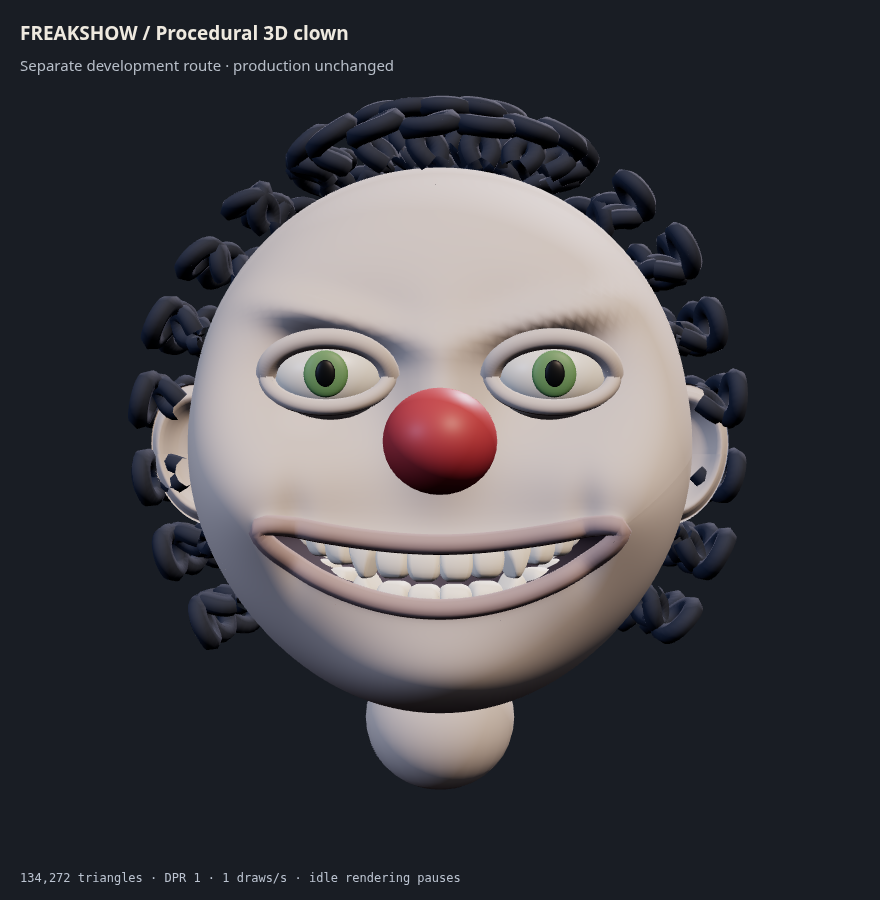
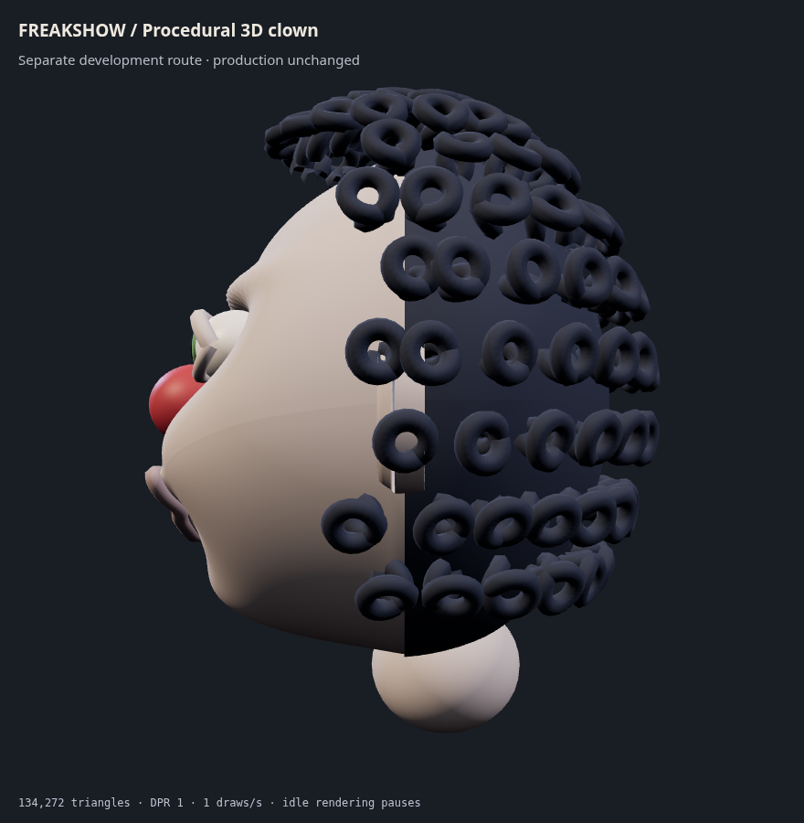
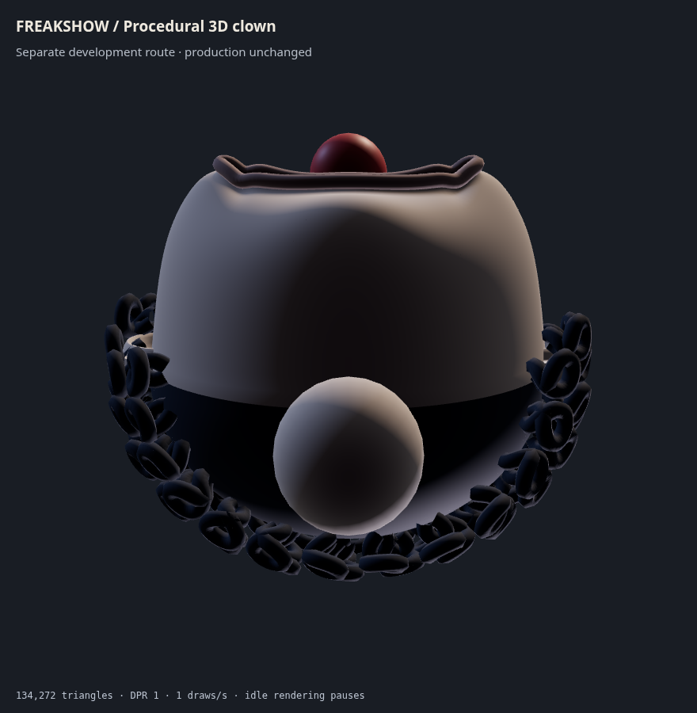
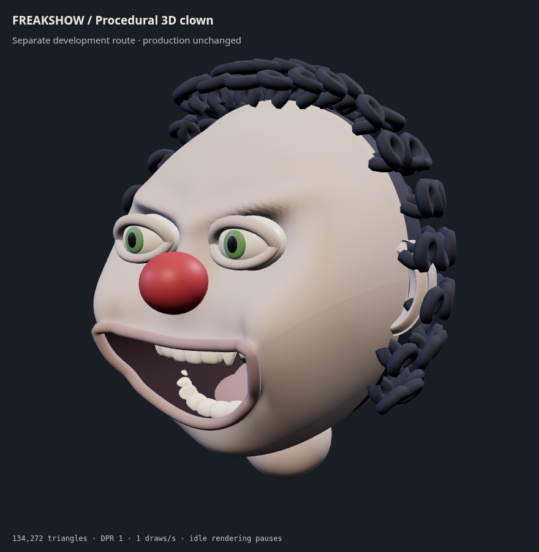

Open the visible, rotatable head
All character surfaces are generated geometry. No illustrated layers or external model assets. This is the first anatomy stage: eyelid and ear attachments, lip transitions, large jaw openings and curl grooming still need refinement. Production remains unchanged.



